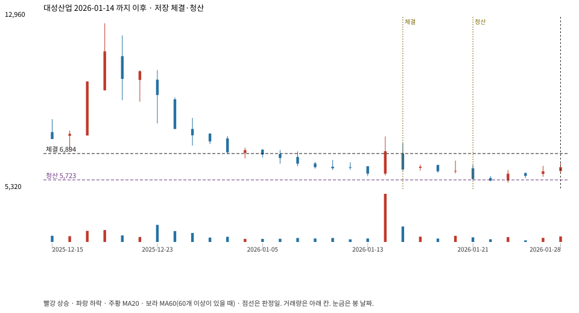

계좌를 다시 돌리지 않았다. 아래는 저장된 주문·체결·청산·비용·손익이다.

{
"case_id": "5fce2ef1690c1f93",
"status": "closed",
"trade": {
"symbol": "128820.KS",
"signal_date": "2026-01-14",
"quantity": 799,
"entry": 6996,
"stop": 5726,
"target": 12677,
"planned_risk": 1027180.1274629988,
"reserved_cash": 5595393.804,
"fill": {
"date": "2026-01-15",
"price": 6893.7679152832025,
"fee": 5508.120564311279
},
"exit": {
"date": "2026-01-21",
"price": 5723.137,
"reason": "stop",
"net_pnl": -945415.0083385902,
"ambiguous_bar": false
}
},
"cost": "research fee 10bp each side, slippage 5bp; amounts below are the stored ledger, not a new run",
"chart": "c\/5fce2ef1690c1f93.svg"
}